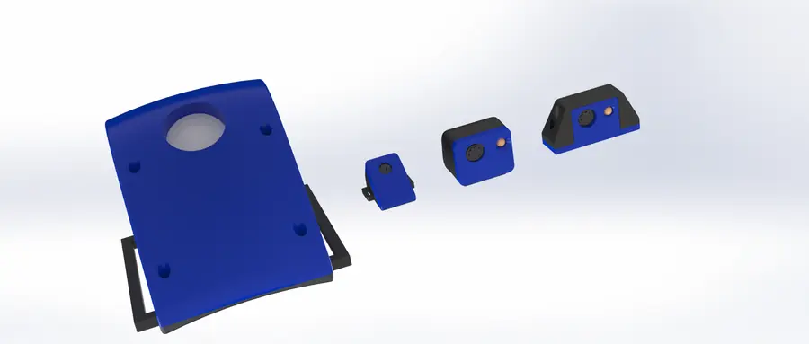

Goal
GPS shows where a pangolin went; a camera can show what it was doing there. The goal was an animal-borne tag that captures intermittent images at low power, giving researchers visual data on rare, endangered animals that are almost never observed directly. The hardware is a small enclosure housing an Arducam camera module, and I designed several versions of that enclosure.

Firmware
To validate the camera I wrote firmware in C (STM32 HAL) for an STM32L476RG, an ultra-low-power microcontroller, on a Nucleo board connected to an Arducam module built around the OV2640 2-megapixel sensor:
- Bring-up checks. An SPI register test verifies the Arducam link and an I²C bus scan confirms the sensor responds. Status is reported over UART.
- Sensor configuration over I²C (SCCB). Reset the OV2640, then load register tables for JPEG output at 1600×1200.
- Capture over SPI. Flush the Arducam's frame FIFO, trigger a capture, poll for the capture-done flag, then read the 24-bit image length.
- Burst read and stream. Burst-read the JPEG out of the FIFO and stream it to a PC over UART at 921,600 baud for checking.
- Repeat on a timer. Wait 5 s and take the next picture.
The capture loop, lightly condensed:
while (1) { Arducam_WriteReg(ARDUCHIP_FIFO, FIFO_CLEAR_MASK); // flush frame FIFO Arducam_WriteReg(ARDUCHIP_FIFO, FIFO_START_MASK); // trigger capture while (!(Arducam_ReadReg(ARDUCHIP_TRIG) & CAP_DONE_MASK)) HAL_Delay(10); // wait for frame uint32_t length = (Arducam_ReadReg(ARDUCHIP_FIFO_CODE2) << 16) | (Arducam_ReadReg(ARDUCHIP_FIFO_CODE1) << 8) | Arducam_ReadReg(ARDUCHIP_FIFO_CODE0); // 24-bit JPEG size CS_LOW(); uint8_t cmd = BURST_FIFO_READ; HAL_SPI_Transmit(&hspi1, &cmd, 1, 100); // burst-read the JPEG for (uint32_t i = 0; i < length; i++) { uint8_t b; HAL_SPI_Receive(&hspi1, &b, 1, 100); HAL_UART_Transmit(&huart2, &b, 1, 100); // stream to PC @ 921600 baud } CS_HIGH(); HAL_Delay(5000); // next picture in 5 s }
From bench to field
The bench firmware streams every frame to a PC so capture can be verified. A field tag would store images on board and keep the microcontroller in a low-power state between captures, which is exactly what the STM32L4 family is built for. This prototype fed into the lab's later GPS tag enclosure work.